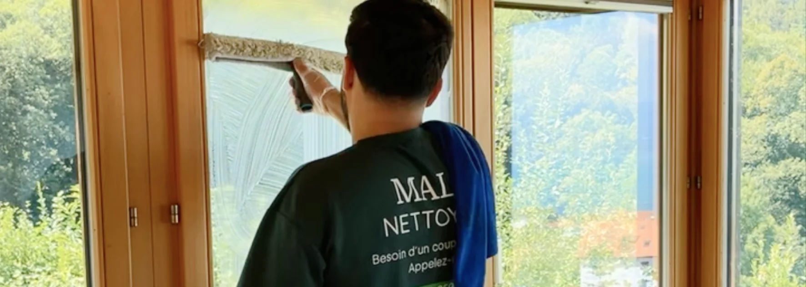

- Estavayer : chef-lieu du district de la Broye (Fribourg), plus de 10 000 habitants
- 3 critères clés : entreprise locale, prix fixe écrit, garantie retour gratuit
- Prestations principales : fin de bail, nettoyage de vitres, fin de chantier, entretien régulier
- Avantage local : connaissance des régies, intervention rapide, déplacement minimal
- Zone élargie : la plupart des entreprises couvrent aussi Font, Bussy, Murist, Cheyres, Payerne
Estavayer-le-Lac : une commune dynamique au bord du lac de Neuchâtel
Située au bord du lac de Neuchâtel, Estavayer-le-Lac est le chef-lieu du district de la Broye (canton de Fribourg) et la 4e plus grande commune du canton. Depuis la fusion de 2017, la commune d'Estavayer regroupe 13 villages (Autavaux, Bussy, Font, Forel, Franex, Montborget, Morens, Murist, Rueyres-les-Prés, Vuissens, etc.) pour un total de plus de 10 000 habitants.
Cette position stratégique entre les cantons de Fribourg, Vaud et Neuchâtel fait d'Estavayer un lieu de vie où les besoins en services de nettoyage sont nombreux : déménagements entre cantons, rénovations, entretien de logements et de locaux professionnels dans un tissu résidentiel varié.
Votre nettoyage de fin de bail à Estavayer, clé en main
58 sur 58 états des lieux validés · Basés à 13 km, à Payerne
Voir le service fin de bail →Les prestations de nettoyage les plus demandées à Estavayer
Selon le type de logement et le profil des habitants, certaines prestations reviennent plus souvent que d'autres dans la région.
| Prestation | Pour qui | Fréquence courante |
|---|---|---|
| Nettoyage de fin de bail | Locataires en déménagement | Une seule intervention |
| Nettoyage en profondeur | Propriétaires en rénovation | Une fois par an ou ponctuelle |
| Nettoyage de vitres | Particuliers et commerces | Saisonnier ou trimestriel |
| Nettoyage de fin de chantier | Travaux ou rénovation | Une seule intervention |
| Entretien régulier | Bureaux, cabinets, locaux pro | 1 à 5 fois par semaine |
| Débarras et nettoyage | Décès, vente, déménagement | Ponctuelle, situations sensibles |
Les nettoyages de fin de bail dominent le marché à Estavayer, en raison de la mobilité des habitants entre les cantons de Fribourg, Vaud et Neuchâtel, favorisée par la position tri-cantonale de la commune.
Combien coûte un nettoyage à Estavayer-le-Lac
Les fourchettes de prix observées dans la Broye fribourgeoise sont proches de celles de la Broye vaudoise. Voici les ordres de grandeur indicatifs.
| Type de prestation | Fourchette indicative |
|---|---|
| Fin de bail (appartement 2.5 pièces) | 450 – 700 CHF |
| Fin de bail (appartement 4.5 pièces) | 700 – 1'100 CHF |
| Nettoyage de vitres (maison) | 200 – 450 CHF |
| Nettoyage de fin de chantier | 5 – 9 CHF/m² |
| Nettoyage régulier bureaux | 35 – 60 CHF/heure |
Les 5 critères pour choisir une entreprise de nettoyage à Estavayer
1. La proximité géographique
À Estavayer, choisir une entreprise basée dans la Broye (fribourgeoise ou vaudoise) offre plusieurs avantages concrets :
- Réactivité en cas d'urgence ou de besoin imprévu
- Pas de frais de déplacement excessifs
- Connaissance du tissu local (régies, artisans, fournisseurs)
- Possibilité de retour gratuit si la régie signale un point post-état des lieux
Une entreprise basée à Fribourg-ville, Neuchâtel ou Lausanne facturera souvent un déplacement supplémentaire ou repoussera l'intervention de plusieurs jours.
2. La connaissance des régies locales
Les checklists et exigences des régies varient d'une région à l'autre. Une équipe locale de la Broye a vu passer ces contrôles des dizaines de fois et sait précisément où porter l'effort. C'est un avantage souvent décisif pour la restitution de la caution.
3. La transparence administrative
Vérifications de base à exiger :
- Numéro IDE (CHE-xxx.xxx.xxx) au registre du commerce suisse
- Assurance RC professionnelle avec nom de l'assureur (AXA, La Mobilière, Zurich)
- TVA mentionnée sur les devis et factures
- Conditions générales disponibles
4. Un devis fixe et écrit
Méfiez-vous des « à partir de » qui se transforment en surcoûts. Un bon devis :
- Précise un prix fixe, pas une fourchette
- Détaille les prestations incluses pièce par pièce
- Mentionne la durée d'intervention prévue
- Inclut une garantie de résultat pour les enjeux importants (fin de bail)
5. Les avis Google récents
Cherchez l'entreprise sur Google Maps. Critères de fiabilité :
- Note moyenne supérieure à 4,5/5
- Volume d'avis significatif (plusieurs dizaines minimum)
- Avis récents (moins de 12 mois)
- Réponses de l'entreprise aux avis négatifs (signe de professionnalisme)

La zone d'intervention typique d'une entreprise locale
Une entreprise de nettoyage basée dans la Broye fribourgeoise couvre généralement un rayon d'environ 15 à 25 km autour d'Estavayer. Cela inclut :
Communes fribourgeoises proches
Cheyres-Châbles, Sévaz, Lully, Châtillon, Domdidier, Belmont-Broye, Vallon, Saint-Aubin (FR), Delley-Portalban, Gletterens, Cugy (FR), Ménières, Nuvilly.
Communes vaudoises voisines
Payerne, Avenches, Faoug, Cudrefin, Vallamand, Bellerive, Corcelles-près-Payerne, ainsi que toute la Broye vaudoise jusqu'à Moudon.
Villes plus éloignées (selon entreprise)
Certaines entreprises locales étendent leur zone à Fribourg, Yverdon-les-Bains, Neuchâtel et Murten, généralement sans supplément de déplacement pour les déménagements importants.
Pourquoi privilégier une entreprise locale plutôt qu'un grand groupe
Trois différences majeures jouent en faveur d'une structure ancrée dans la région.
La relation humaine et la continuité
Avec une équipe locale, vous avez un interlocuteur identifié, parfois le dirigeant lui-même. La même équipe revient régulièrement et connaît vos locaux ou votre logement. C'est rare dans les grandes structures où la rotation est constante.
La réactivité en cas d'imprévu
Un prestataire à quelques kilomètres peut revenir gratuitement le lendemain si la régie signale un point. Un grand groupe applique ses procédures, ses délais et facture souvent les retours. Sur un état des lieux, cette réactivité peut faire la différence entre une caution restituée et une retenue contestable.
Le soutien à l'économie locale
Faire appel à une entreprise familiale ancrée dans la Broye, c'est aussi soutenir le tissu économique de la région. Les emplois créés restent locaux, les impôts sont payés localement, et la relation reste humaine.
FAQ – Nettoyage à Estavayer-le-Lac
Quelle est la zone d'intervention d'une entreprise de nettoyage à Estavayer-le-Lac ?
La plupart des entreprises locales couvrent un rayon de 15 à 25 km autour d'Estavayer : Cheyres, Sévaz, Domdidier, Lully, Payerne, Avenches, Cudrefin, ainsi que la Broye vaudoise et une partie du district du Lac. Pour des prestations spécifiques (déménagement, débarras), la zone peut s'étendre jusqu'à Fribourg, Yverdon-les-Bains ou Neuchâtel.
Combien coûte un nettoyage de fin de bail à Estavayer ?
La fourchette indicative se situe entre 450 et 1'100 CHF selon la taille du logement (2.5 à 4.5 pièces), l'état général et les options choisies (vitres, désinfection, produits écologiques). Demandez toujours un devis écrit après visite ou photos, jamais un prix téléphonique.
Combien de temps à l'avance réserver une entreprise de nettoyage à Estavayer ?
Comptez 1 à 2 semaines pour une fin de bail standard, et 3 à 4 semaines en haute saison (fin juin, fin septembre, périodes de fortes mobilités). Pour les urgences, certaines entreprises locales gardent des créneaux disponibles à 48h.
Une entreprise basée à Payerne intervient-elle à Estavayer-le-Lac ?
Oui, sans frais de déplacement supplémentaires dans la majorité des cas. Payerne se trouve à 13 km d'Estavayer, ce qui permet une intervention rapide et un retour gratuit en cas de remarque post-état des lieux. C'est généralement plus avantageux qu'une entreprise basée à Fribourg-ville, Neuchâtel ou Lausanne.
Quelle entreprise de nettoyage choisir pour un état des lieux à Estavayer ?
Privilégiez une entreprise locale qui connaît les régies de la Broye fribourgeoise et propose une garantie retour gratuit écrite. Cette clause engage le prestataire sur le résultat, pas seulement sur le temps passé. C'est le seul vrai filet de sécurité pour la restitution de la caution.
En résumé
Choisir une entreprise de nettoyage à Estavayer-le-Lac, c'est d'abord privilégier la proximité (Broye fribourgeoise ou Payerne à 13 km) et la transparence administrative (IDE, assurance RC Pro, devis fixe écrit). La connaissance des régies locales et la garantie retour gratuit font la différence pour un nettoyage de fin de bail. Une entreprise familiale ancrée dans la région offre la meilleure combinaison de réactivité, qualité et relation humaine.